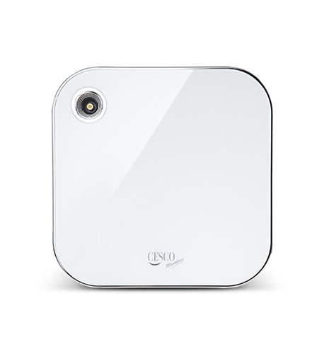
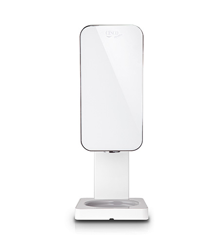
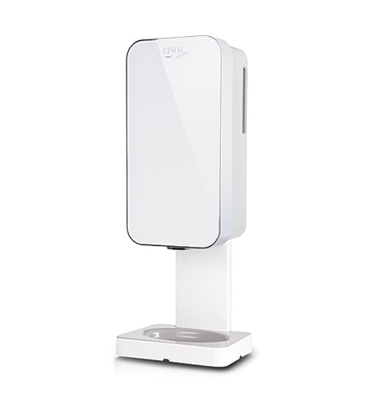
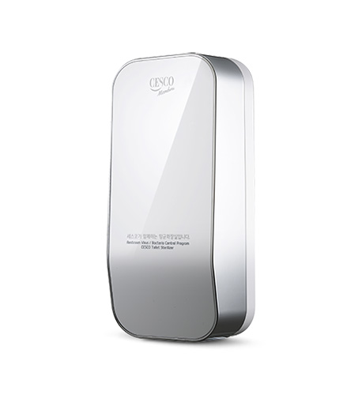

home>
서비스>
의료시설
의료시설
medical facility환자와 직원의 건강을 지키는, 첨단 위생 시스템
자동공간 항균기
세균제어 - 에어제닉퀘적하고 청결한 실내공간을 책임지는 자동공간항균기
- - 실내 공기 소독 및 강력한 탈취력
- - 감각적이면서 실용적으로 세련된 디자인
- - 쉽고 간단한 설치
- - 조용히 내 마음대로 조절한다. 고성능 디펜서
자동손세정기
세균제거, 보습효과 - 핸드제닉자동으로 거품형 세정제가 토출되는 자동 손 세정기
- - 자동센서 방식으로 일반 고형/액체 비누 사용시 접촉으로 인한 교차오염 예방
- - 손에 서식하는 유해세균 대장균, 황색포도상구균 살균(한국화학융합시험연구원 공인시험 완료)
- - 피부질환, 호르몬교란을 일으킬 수 있는 트리콜로산 및 환경유해물질 11종 미포함(한국화학융합시험연구원 공인시험 완료)
새니제닉
물없이 세균제거 - 새니제닉물 없이 유해세균 제거하는 자동 손 소독기
- - 끈적임 없는 폼, 겔 타입의 소독제
- - 손에 서식하는 유해세균 대장균, 황색포도상구균 살균(한국화학융합시험연구원 공인시험 완료)
- - 식품의약품안전처 허가 완료
변기세정기
세균제거, 탈취 - 프레쉬제닉쾌적한 화장실을 책임지는 프레쉬제닉
- - 위생관리 안심
- - 악취 안심
- - 인테리어 안심